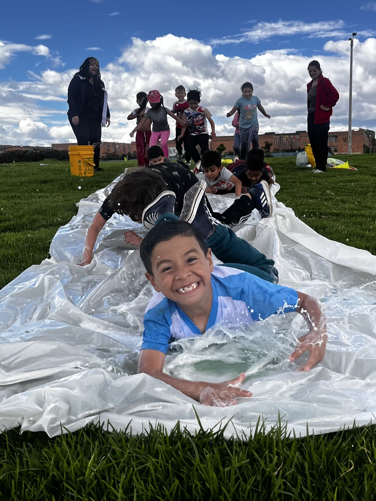

Nuestro objetivo
Promovemos la salud mental en niños, niñas y jóvenes con vulnerabilidad económica.

Por qué es urgente
Estos son los datos que citamos sobre la salud mental de niños, niñas y adolescentes.
-
Informe a la ONU 2021
- El 13 % de los adolescentes de entre 10 y 19 años en el mundo padece un trastorno mental diagnosticado. cifra y fuente por confirmar
- La pandemia de COVID-19 ha exacerbado los problemas de salud mental. fuente por confirmar
- En Colombia, entre el 10 % y el 20 % de los adolescentes experimentan problemas de salud mental. La depresión es uno de los trastornos más prevalentes en esta población. cifra y fuente por confirmar
-
Informe a la OMS
- Los adolescentes con trastornos mentales son particularmente vulnerables a la exclusión social, la discriminación y las dificultades educativas. fuente por confirmar
Cómo lo hacemos
Una estrategia integral en tres componentes
Trabajamos por la prevención de la depresión y el suicidio en niños y jóvenes con vulnerabilidad económica. Estas son las razones detrás de cada componente.
-
01 Formación y educación
Un propósito
Cuando alguien carece de un propósito claro o no ve un camino hacia adelante, puede sentir desesperanza y vacío. La falta de un proyecto de vida sólido aumenta la vulnerabilidad a la depresión.
Por eso formamos a niños y adolescentes en la construcción de su proyecto de vida, desarrollamos las habilidades que necesitan para llevarlo a cabo y los guiamos para lograrlo. Así disminuye la probabilidad de que desarrollen depresión.
-
02 Atención psicosocial
Alguien que lo escuche
La desesperanza, la depresión o la baja autoestima pueden llevar a niños y adolescentes a tener ideas suicidas.
Por eso les damos oportunidades de ser escuchados y fortalecemos sus habilidades y su bienestar. Así se refuerzan sus redes de apoyo, que se convierten en factores protectores de su salud mental.
-
03 Seguridad alimentaria y humanitaria
Comida en la mesa
La evaluación del Programa Mundial de Alimentos muestra que solo uno de cada tres colombianos tiene un consumo aceptable de alimentos, mientras que un poco más de la mitad de la población aplica estrategias de afrontamiento, como consumir alimentos menos preferidos, disminuir el tamaño de las porciones y reducir el número de comidas al día. En algunos casos, los adultos limitan sus porciones para que los niños y niñas puedan comer, o pasan días sin comer. En el caso del distrito de Bogotá, un millón de personas se encuentran en inseguridad alimentaria, lo que representa el 13 % de la población de la capital. cifras y fuente por confirmar año por confirmar
Cuando falta la comida, crecen las tensiones en casa. Por eso reforzamos la canasta familiar de los niños y sus familias.
Dónde trabajamos barrios por confirmar
Bogotá: Patio Bonito, Bella Vista y Tierra Buena
Esto es lo que hemos venido haciendo:
- Desarrollamos programas de formación deportiva y artística.
- Brindamos atención psicosocial e integral para la prevención del suicidio y la depresión.
- Proporcionamos seguridad alimentaria y reforzamos la canasta familiar de los niños y sus familias.
- Acompañamos y patrocinamos a los jóvenes en el desarrollo de su proyecto de vida.
- Desarrollamos programas de bienestar y recreación.
- Proveemos herramientas que dignifican la calidad de vida y gestionamos brigadas de salud.
- Damos talleres de habilidades blandas, de promoción de la salud mental y de prevención de enfermedades mentales.
También en Quiénes somos
-
Misión y visión
Lo que hacemos y lo que queremos lograr para el año 2028.
Leer más sobre la misión y la visión -
Nuestro equipo
Las personas que dirigen, coordinan y lideran nuestros programas y proyectos.
Leer más sobre nuestro equipo -
Organigrama
Cómo se organiza el equipo, según el organigrama de agosto de 2024.
Leer más sobre el organigrama
Conoce nuestro trabajo
Seis programas llevan estos tres componentes a la práctica, con los niños y con sus familias.
Pendientes de confirmación (vista previa)
Cada elemento marcado por confirmar en esta página depende de una suposición de trabajo o de información que la fundación aún no ha confirmado. Nada se publica hasta que la fundación lo confirme.
- Cifras y fuentes: cada dato atribuido al «Informe a la ONU 2021» y al «Informe a la OMS», y los datos del Programa Mundial de Alimentos y de Bogotá. Falta el informe exacto (título, entidad, año y enlace) de cada uno; «a la ONU» parece querer decir «de la ONU», y el dato de Bogotá no tiene fuente propia.
- Logos: se retiraron los logos de UNICEF y de la OMS que acompañaban las cifras, porque sugieren un respaldo de esas entidades.
- Afirmaciones excluidas: «más de 10 años de experiencia» y «pioneros» no aparecen hasta que se confirmen el año de fundación y una fuente.
- Barrios: esta página nombra Patio Bonito, Bella Vista y Tierra Buena; otras páginas solo nombran Patio Bonito (Kennedy).
- Salud mental: el líder psicosocial revisa los textos sobre depresión y suicidio, en especial la nueva redacción del componente de atención psicosocial, y la línea de ayuda (Línea 106 y 123). Los números se vuelven a verificar antes de publicar.
- Redacción: los cambios a los textos de la fundación son propuestas (lista en el archivo de textos de esta sección).
- Consentimiento de imagen: la foto de esta página (juego con agua sobre el pasto) no tiene consentimiento registrado.
- Pie de página: NIT y dirección registrada; que los números de WhatsApp y los correos sean los públicos.